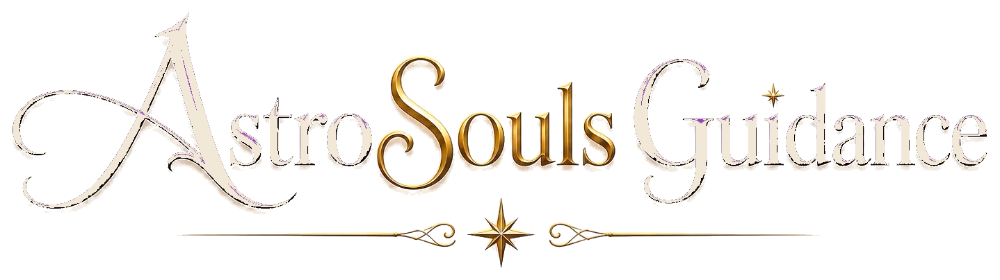

01 / ASTROLOGY☼
✧
Birth Chart Reading
Explore the themes and placements in your birth chart as a tool for self-understanding and reflection.
Enquire about a reading ↗
ASTROLOGY · NUMEROLOGY · SELF-DISCOVERY
A thoughtful space to explore the patterns, possibilities and perspectives that make your journey uniquely yours.
At AstroSouls Guidance, we bring together the language of astrology and numerology to offer perspectives for self-reflection and personal exploration.
Think of each session as a space to pause, ask meaningful questions and consider your next steps with greater intention.
Start a conversation ↗A PERSONAL APPROACH TO GUIDANCE
MEET THE FOUNDER
With 4 years of experience in horoscope and astrology, Mrs. Jojan Ahuja brings a thoughtful, personal approach to exploring life's questions. Her areas of focus include relationships and personal affairs, alongside broader astrological guidance.
AstroSouls Guidance is a space for people seeking perspective, clarity and a deeper understanding of the themes that shape their personal journey. Every conversation begins with listening to what matters to you.
Connect with AstroSouls ↗WAYS TO EXPLORE
Choose a path that feels relevant to what you are exploring right now.
Explore the themes and placements in your birth chart as a tool for self-understanding and reflection.
Enquire about a reading ↗Discover how numbers connected to your date of birth are interpreted within numerology.
Enquire about numerology ↗Bring your questions to a focused conversation designed to help you reflect on your way forward.
Start an enquiry ↗Astrology and numerology are presented as reflective and spiritual practices, not as substitutes for professional medical, legal or financial advice.
A THOUGHT TO CARRY WITH YOU
ASTROSOULS GUIDANCE
THE COSMIC JOURNAL
Small ideas and useful starting points for your self-discovery journey.
GOOD TO KNOW
Some helpful context before you get in touch.
A session is intended as a space to explore your questions through astrology or numerology and reflect on possible perspectives. Share your area of interest through the enquiry form to discuss the next steps.
No prior knowledge is needed to make an enquiry. You can tell us what you are curious about, and we can help you identify a suitable starting point.
Use the enquiry form below, select the service you are interested in and share your message. The contact form needs a business email or form service connected before it can receive submissions.
YOUR NEXT CHAPTER STARTS HERE
Tell us what you would like to explore. We'll help you understand the next steps for an enquiry or session.